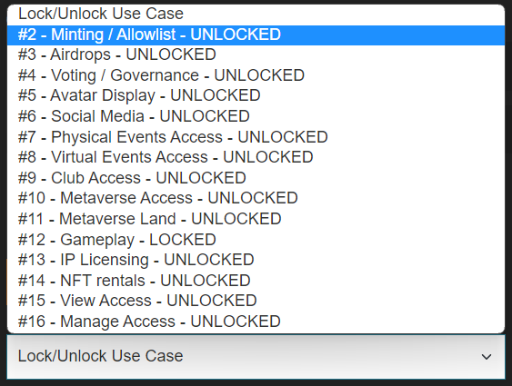
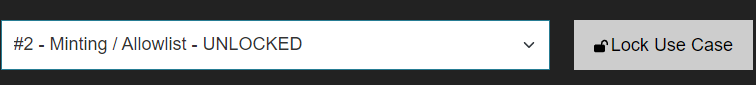

The primary purpose of a locking is to lock your wallet address from accepting inbound delegations such as someone delegating their rights to you. While we do not think this will be a common case, we could imagine people doing this to then
try to socially engineer a third party by pretending your addresses are related. Note that nobody can register a delegation from your wallet unless you sign it yourself or you have appointed them as your delegation manager (use case 998): a manager you appoint can register and revoke delegations and consolidations on your behalf. To refuse incoming consolidation registrations, including ones submitted by managers, follow the steps below on the Manage/View Any Collection page and lock the Consolidation use case (#999).
With a use case lock, your address will not accept incoming delegations for a specific use case (you should only do this after you have made your own delegations,
if you are certain that you do not plan to delegate any more addresses, as you would have to then unlock to accept your own delegations).
The example below covers locking inbound delegation for specific use case.
To lock your wallet for a specific use case:
- At the bottom of the Manage/View Collection page, click on the 'Lock/Unlock Use Case' dropdown list and select a Use Case.

- 2. Click the 'Lock Use Case' button.

- Execute the transaction.